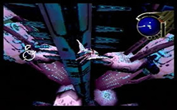

 |
| (Tower Report 2) - Uru Tower Records (1/2) Record by 'Compiler' Feltman The following is
the summary of the data recorded on the Information Unit found near
Uru. The contents include the (2/2) If anyone is determined to reach this Tower, it
will be a very difficult journey. I wish for this record to be a helpful
guide. Courses Inside the Tower (1/3) Inside the Tower, there are five separate sections. (2/3) From upper floors to outer 13F -> from 13F
to 12F via elevator -> from 12F to upper hangar From upper hangar
to outer 11F From 11F to 9F via elevator -> From 9F to middle floors (3/3) From middle floors to outer 8F -> From 8F to
6F via elevator -> From 6F to lower hangar From lower hangar to outer
5F -> From 5F to 4F via elevator -> From 4F to bottom floors Rotating
Unit at Middle Floors (1/1) In the middle floors, there exists a rotating
unit that changes the form of the outer area. If it is (1/2) Inside the Tower, there are 6 Locations of the controllers: (2/2) ' #1 - outer 15F
east |